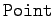
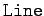
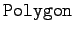
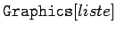
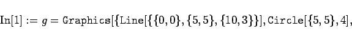
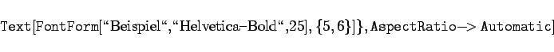
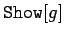
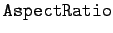
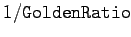
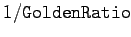

Inhalt Index DeskTop Bronstein

 Computeralgebrasysteme Graphik in Computeralgebrasystemen Graphik mit Mathematica
Computeralgebrasysteme Graphik in Computeralgebrasystemen Graphik mit Mathematica


Mathematica baut graphische Objekte aus eingebauten Graphik-Primitiven auf. Das sind Objekte wie Punkte (), Linien () und Polygone () sowie Eigenschaften dieser Objekte wie Dicke und Farbe.
Des weiteren verfügt Mathematica über viele Optionen, die angeben, in welcher Umgebung und in welcher Art die graphischen Objekte dargestellt werden sollen.
Mit dem Befehl , wobei liste eine Liste graphischer Primitiven ist, wird Mathematica aufgefordert, eine Graphik aus den aufgelisteten Objekten zu erstellen. Der Objektliste kann eine Liste von Optionen für die Art der Darstellung folgen.
Mit der folgenden Eingabe
|  | (20.80a) |
|  | (20.80b) |
wird eine Graphik aus folgenden Elementen aufgebaut:
Mit dem Aufruf  liefert Mathematica das Bild der erzeugten Graphik:
Hierbei werden gewisse Voreinsstellungen der Graphikoptionen benutzt. Im gegebenen Fall wurde die Option  auf  gesetzt. Ihre Voreinstellung lautet . Das entspricht einem Verhältnis zwischen der Ausdehnung in der x-Richtung zu dem der y-Richtung von 1:1/1,618=1:0,618. Mit dieser Einstellung wäre der Kreis verzerrt als Ellipse dargestellt worden. Die Einstellung dieser Option auf Automatic bewirkt, daß die Darstellung unverzerrt erfolgt.
gesetzt. Ihre Voreinstellung lautet . Das entspricht einem Verhältnis zwischen der Ausdehnung in der x-Richtung zu dem der y-Richtung von 1:1/1,618=1:0,618. Mit dieser Einstellung wäre der Kreis verzerrt als Ellipse dargestellt worden. Die Einstellung dieser Option auf Automatic bewirkt, daß die Darstellung unverzerrt erfolgt.